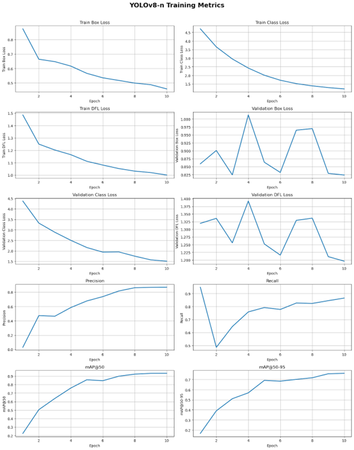
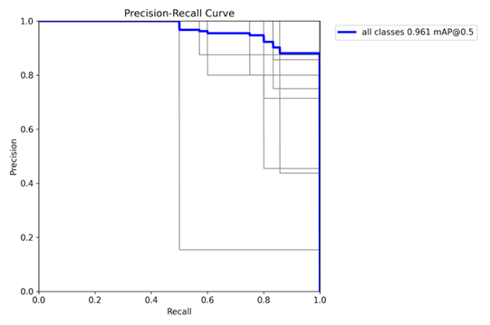

Model Design and Initial Experiments#
Authors: Usher Raymond Abainza, Dane Casey Casino, Kein Jake Culanggo, and Karylle dela Cruz
1 Model Design#
1.1 Model Architecture
This study adopts two variants of YOLOv8 (You Only Look Once version 8), namely the “Nano” (YOLOv8‑n) and “Small” (YOLOv8‑s) configurations, as the core architecture for ASL fingerspelling recognition. YOLOv8 constitutes a contemporary generation of one‑stage object detectors, designed to unify detection, both localization and classification, in a single pass while maintaining efficiency suitable for deployment beyond high‑end GPUs. Unlike legacy CNN classifiers trained for image-level recognition, the YOLO paradigm directly predicts bounding boxes and class scores, enabling detection of hand gestures in diverse contexts and supporting real‑time or near‑real‑time inference. The motivation to revisit YOLO, after initial experiments with classification-based CNNs, stems from the need to support continuous fingerspelling detection across video frames, where spatial localization and temporal consistency are critical.
YOLOv8 itself advances the YOLO lineage by adopting an anchor‑free, decoupled detection head architecture and replacing earlier backbone modules (such as C3) with more efficient constructs (e.g., C2f), thereby improving gradient flow and feature representation while reducing computational overhead. This architectural refinement supports more robust detection of small or irregular objects, a desirable property when the target is a human hand performing subtle sign language gestures [16].
Two model scales were selected to systematically examine the trade‑off between resource demand and detection performance:
YOLOv8‑n (Nano): The most lightweight variant of YOLOv8, parametrized to minimize memory footprint and computational complexity. According to YOLOv8 documentation, this variant has roughly 3.2 million parameters and requires on the order of 8.7 GFLOPs for inference at 640 × 640 resolution. Its inference latency on GPU (e.g., with TensorRT on a T4) can be as low as ~1.47 ms per image, making it especially suitable for edge devices, embedded systems, or real-time applications where latency and efficiency are prioritized [16]. The Nano variant’s compactness makes it an appropriate baseline for deployment in resource-constrained environments, for example, mobile learning apps or educational platforms where hardware may be limited.
YOLOv8‑s (Small): A moderately-sized variant that increases model capacity compared to Nano, typically offering a larger backbone and more feature channels. At 640 × 640 input resolution, YOLOv8‑s demands more computation (e.g., significantly more FLOPs and parameters than Nano) but yields higher detection quality in many contexts. According to benchmark results on standard detection datasets like COCO, YOLOv8‑s achieves higher mean Average Precision (mAP) than the Nano version, reflecting its superior capability to detect smaller, more subtle, or occluded objects under varied conditions [16], [17]. In the context of ASL handshape detection, this increased capacity may translate to better discrimination among visually similar hand configurations and improved robustness against noise such as lighting variation, minor occlusions, or variable hand orientation.
Both variants share the core YOLOv8 architecture, which is structured in three functional modules: a backbone for hierarchical feature extraction, a neck that performs multi-scale feature aggregation to enhance detection robustness across different object sizes, and a detection head that outputs bounding box coordinates, objectness/confidence scores, and class probabilities. The anchor-free and decoupled head design simplifies detection and reduces hyperparameter tuning compared to earlier YOLO versions, facilitating adaptation to custom, domain-specific tasks such as ASL letter detection [16]. Adopting the pretrained weights released by the developers of YOLOv8, originally trained on generic object detection datasets such as COCO, enables transfer learning. This initialization leverages learned representations for general object features, which are then fine-tuned to capture the unique spatial and structural patterns characteristic of human handshapes in ASL, accelerating convergence and improving generalization while reducing the need for extremely large ASL-specific training datasets.
Selecting YOLOv8-n and YOLOv8-s constitutes a deliberate design choice grounded in balancing computational resource constraints, deployment feasibility, and recognition performance. Comparing Nano and Small allows for an evidence-based evaluation of whether a lightweight model suffices for accurate fingerspelling detection or whether the added complexity of a larger model provides meaningful gains in classification reliability, especially under the variable conditions typical of user-submitted videos such as lighting variation, hand orientation, and motion blur.
1.2 Training Configuration
Both YOLOv8 variants were trained under identical conditions to ensure a fair comparison and to isolate the impact of model scale on ASL fingerspelling recognition performance. The training setup was carefully designed to balance model accuracy, computational efficiency, and convergence stability, while simultaneously minimizing the risk of overfitting on the relatively limited ASL dataset. The models were trained using the Ultralytics YOLOv8 framework, which integrates data loading, loss computation, weight optimization, and augmentation procedures in a seamless pipeline, allowing for efficient experimentation and reproducibility. The training call was structured as follows:
model.train(
data="data/data.yaml",
epochs=10,
imgsz=640,
batch=16,
name="model_name"
)
Training Hyperparameters. To ensure both YOLOv8 variants are evaluated under consistent conditions, the models were trained using carefully selected hyperparameters that balance convergence speed, detection accuracy, and computational efficiency. The following table summarizes the key training settings and their relevance to ASL fingerspelling recognition.
Hyperparameter |
Value |
Relevance to ASL Detection |
|---|---|---|
Epochs |
10 |
Provides sufficient iterations for model convergence while avoiding overfitting on ASL data. |
Input Resolution |
640 × 640 pixels |
Balances fine-grained handshape detail capture with computational efficiency for real-time processing. |
Batch Size |
16 images per batch |
Ensures stable gradient updates and efficient GPU utilization without exceeding memory limits. |
Optimizer |
AdamW with automatic LR scheduling |
Adapts learning rate during training to maintain smooth convergence and reduce oscillations in the loss. |
Data Configuration |
Defined in data.yaml with training/validation splits and class definitions |
Guarantees systematic evaluation and proper class coverage for all ASL letters. |
Table 1-1. Training Hyperparameters for YOLOv8 Variants in ASL Letter Detection
Transfer Learning Strategy. Both YOLOv8 variants were initialized with the official pretrained weights provided by Ultralytics (yolov8n.pt and yolov8s.pt), which were originally trained on the COCO dataset containing 80 object categories. Leveraging these pretrained weights allows the models to inherit generalized feature extraction capabilities, such as edge, texture, and shape detection, that are transferable across domains. In the context of ASL fingerspelling recognition, this transfer learning approach is particularly beneficial because hand shapes exhibit structural patterns that can be efficiently recognized by features learned from generic object datasets. Fine-tuning on the ASL dataset enables the models to specialize these generalized features for precise localization and classification of hand gestures, improving convergence speed and final detection performance compared to training from random initialization, which would require substantially more data and computational effort.
Training Procedure. Training was conducted using the Ultralytics YOLOv8 framework, which manages data loading, augmentation, loss computation, and weight optimization in an integrated pipeline. During training, data augmentation strategies described in the Data Preprocessing section were applied dynamically, producing diverse samples that improve the model’s robustness to variations in hand orientation, lighting, and partial occlusions, which are common challenges in real-world ASL video streams.
Model Identification. The trained models were saved with distinct identifiers to ensure clarity and reproducibility during subsequent evaluation. Each identifier reflects the model’s configuration and its intended role in the comparative analysis:
YOLOv8-n (Nano) model: Saved as yolo8n_baseline to denote the lightweight Nano configuration. This model serves as the baseline for performance assessment, representing a resource-efficient option suitable for deployment in real-time or mobile applications. Its compact size allows for rapid inference while providing sufficient accuracy for initial evaluation of ASL letter recognition.
YOLOv8-s (Small) model: Saved as yolo_model to represent the Small configuration, which has greater model capacity and feature extraction capability. This identifier facilitates direct comparison against the Nano baseline to determine whether the additional computational cost translates to meaningful improvements in detection accuracy, especially under challenging conditions such as varied lighting, partial hand occlusion, or subtle differences between similar hand shapes.
This structured approach enables a systematic assessment of the trade-off between model efficiency and detection performance. By maintaining distinct identifiers, experiments can clearly track how each model behaves under identical training and evaluation conditions, providing evidence-based insights into whether the higher-capacity YOLOv8s is justified for real-world ASL fingerspelling applications.
2 Initial Experiments#
2.1 YOLOv8-n (Nano). To evaluate the effectiveness of the lightweight YOLOv8‑n configuration for ASL fingerspelling detection, the model was trained for 10 epochs under the experimental conditions described previously. Performance was assessed using standard object detection metrics, including mean Average Precision at IoU thresholds 0.5 to 0.95 (mAP50-95), precision, and recall. These metrics provide a comprehensive view of the model’s ability to correctly detect and classify hand gestures while minimizing false positives and false negatives. The following results summarize the model’s best performance during the training process.

Figure 2-1. YOLOv8-n (Nano) Training Metrics
Training Duration |
Best Epoch |
Best mAP50-95 |
Best Precision |
Best Recall |
|---|---|---|---|---|
1.326 hours |
10.0 |
0.76236 |
0.86954 |
0.86505 |
Table 2-1. YOLOv8-n (Nano)Training Performance Metrics
Training Progress and Loss Analysis. The YOLOv8‑n model completed training in 1.326 hours, converging at epoch 10. Analysis of the training losses indicates robust learning behavior. The Train Box Loss declined smoothly from approximately 0.85 to 0.5, reflecting steady improvement in the model’s ability to predict bounding box coordinates. This is particularly relevant for ASL fingerspelling recognition, as precise hand localization is essential to distinguish subtle differences between similar handshapes. The Train Class Loss began at 4.6 and decreased consistently to around 1.0, demonstrating that the model is effectively learning to differentiate the 26 ASL letters despite visual similarities between certain gestures. The Train Distribution Focal Loss (DFL), designed to capture probabilistic bounding box placement, decreased from 1.5 to approximately 1.0, signaling growing confidence in localizing hands even under variable scales and orientations. Overall, the smooth decline across all training losses suggests stable optimization and effective convergence tailored to the ASL detection task.
Validation Performance and Generalization. Validation metrics reveal the model’s ability to generalize to unseen examples. The Validation Box Loss exhibited high volatility between 0.825 and 1.0, indicating difficulty in consistently locating hands under challenging conditions such as partial occlusions, motion blur, or diverse background contexts. Conversely, the Validation Class Loss steadily decreased from 4.5 to just below 2.0, highlighting that the model generalizes well in classifying handshapes despite the inherent visual ambiguity of certain letters. The Validation DFL Loss mirrored the oscillations of the box loss, further emphasizing that precise localization remains a challenge on validation data. These observations underscore that while YOLOv8‑n can reliably identify which handshape is present, achieving exact bounding box placement for all frames is more difficult under realistic variations.
Detection Metrics. Evaluation of detection performance reinforces this nuanced pattern. Precision increased rapidly and stabilized between 0.8 and 0.85, showing that most predicted detections corresponded correctly to actual hand positions. Recall initially dropped from near 0.95 to approximately 0.5, likely due to the model predicting many false positives in early epochs, but recovered to stabilize between 0.85 and 0.9, reflecting improved sensitivity in identifying all true instances of hand gestures. The mAP@50 metric reached approximately 0.9, demonstrating strong detection performance under a moderate overlap requirement. However, the stricter mAP@50‑95 averaged just above 0.7, revealing limitations in fine-grained localization accuracy. For ASL recognition, this gap highlights that while the model can roughly locate hands and classify them correctly, subtle misalignments in bounding boxes could lead to occasional misclassification between visually similar letters, particularly in dynamic video frames.
Summary and Interpretation. In summary, YOLOv8‑n demonstrates strong classification and overall detection capabilities, with high Precision, Recall, and mAP@50. The primary limitation lies in precise localization, as evidenced by the volatility in Validation Box and DFL losses and the difference between mAP@50 and mAP@50‑95. For the ASL fingerspelling task, this indicates that while the model is well-suited for real-time recognition of hand gestures and can reliably classify letters in most scenarios, additional measures—such as targeted data augmentation, fine-tuning on challenging hand orientations, or integrating temporal smoothing across video frames—may be necessary to improve bounding box precision and minimize subtle classification errors.

Figure 2-2. YOLOv8-n (Nano) Precision–Confidence and Recall–Confidence curves
These curves illustrate how model output confidence relates to class decision quality. Precision–Confidence describes how the proportion of correct positive detections changes as the confidence threshold increases, while Recall–Confidence measures how many true positives are retained. The combined interpretation shows the trade off between strict filtering and overall detection coverage. The optimal operating region is typically identified where both curves remain stable before one begins to decline, indicating a suitable confidence threshold for deployment.

Figure 2-3. YOLOv8-n (Nano) Precision–Recall curve
The precision–recall curve presents a ranking quality view of detections independent of a fixed confidence cutoff. The shape of this curve indicates performance across varying thresholds and is directly tied to mean average precision. High precision maintained over a broad range of recall values indicates strong discriminative capability and reliable positive identification within the dataset.

Figure 2-4. YOLOv8-n (Nano) F1-Confidence Curve
The F1–Confidence curve identifies a point where precision and recall achieve the highest balanced performance. The peak of this curve provides a recommended confidence threshold that optimizes harmonic mean performance and can serve as a practical default setting for real application use.
2.2 YOLOv8-s (Small). To examine the performance gains associated with a larger model capacity, the YOLOv8-s configuration was likewise trained for 10 epochs under the same experimental conditions. Model performance was evaluated using mean Average Precision at IoU thresholds 0.5 to 0.95 (mAP50-95), precision, and recall, which together measure overall detection quality, localization accuracy, and error sensitivity. In contrast to the nano variant, the small architecture is expected to offer improved feature extraction and generalization capabilities. The following results summarize the model’s best performance during the training process.

Figure 2-5. YOLOv8-s (Small) Training Metrics
Training Duration |
Best Epoch |
Best mAP50-95 |
Best Precision |
Best Recall |
|---|---|---|---|---|
3.168 hours |
10.0 |
0.77813 |
0.94178 |
0.86841 |
Table 2-2. YOLOv8-s (Small) Training Performance Metrics
Training Progress and Loss Analysis. Analysis of the YOLOv8-s training losses indicates stable convergence over 10 epochs. The Train Box Loss declined from values above 0.9 to approximately 0.45, reflecting consistent improvement in bounding box localization. The Train Class Loss began above 5.0 and decreased smoothly to below 0.5, demonstrating that the model rapidly acquired discriminative features for object classification. The Train Distribution Focal Loss (DFL) decreased from roughly 1.55 to 1.0, signaling increasing confidence in precise localization predictions. The smooth downward behavior of all three training loss curves suggests that the optimization process proceeded in a stable manner and that the model effectively learned spatial and categorical relationships present in the training dataset.
Validation Performance and Generalization. Performance on the validation set reveals a more uneven generalization profile. The Validation Box Loss fluctuated sharply between approximately 0.825 and 1.0, indicating difficulty in consistently localizing objects under unseen conditions and suggesting overfitting to bounding box placement in the training domain. By contrast, the Validation Class Loss decreased steadily from roughly 3.1 to 0.6, highlighting strong generalization in object classification. The Validation DFL Loss exhibited oscillatory behavior between approximately 1.25 and 1.40 and mirrored the instability observed in the box loss. Taken together, these validation metrics show that while YOLOv8-s reliably transfers its object identification ability to new samples, fine-grained localization remains unstable on unseen data.
Detection Metrics. Evaluation of detection behavior further underscores this performance profile. Precision increased after the early epochs and stabilized around 0.9, demonstrating that a high proportion of model predictions corresponded to correct detections. Recall followed a similar trajectory and stabilized around 0.88, reflecting strong sensitivity to true objects in the validation set and a reduced likelihood of false negatives. These values indicate that YOLOv8-s can identify and classify objects reliably even when localization accuracy fluctuates.
Summary and Interpretation. Overall, YOLOv8-s demonstrates strong classification capability and reliable overall detection performance, as evidenced by the stable Precision and Recall values by the end of training. The principal limitation concerns precise bounding box localization, which is reflected in the volatility of the Validation Box and DFL losses. These findings suggest that while the model is suitable for real-time detection tasks and performs well in identifying target classes, further attention to localization stability may improve fine-grained accuracy. Potential remedies include additional training data for difficult visual cases, tuning of learning rate schedules, or the application of targeted augmentation strategies designed to increase robustness in bounding box regression.

Figure 2-6. YOLOv8-s (Small) Precision–Confidence and Recall–Confidence curves
These curves collectively illustrate the trade-off between detection accuracy and coverage as the confidence threshold changes. The Precision–Confidence curve shows that as the confidence threshold increases, precision rises, indicating that predictions retained at higher thresholds are increasingly reliable. Conversely, the Recall–Confidence curve shows that recall decreases with higher thresholds, as stricter filtering excludes some true positives. Together, these curves reveal the inherent balance between maximizing correct detections and maintaining comprehensive coverage. An optimal confidence threshold is typically identified where precision is high but recall has not yet declined sharply, providing a practical setting for deployment that balances accuracy with detection completeness.

Figure 2-7. YOLOv8-s (Small) Precision–Recall curve
The Precision–Recall curve provides a threshold-independent view of detection quality. High precision sustained across a wide range of recall values indicates the model reliably identifies true positives while minimizing false positives. The reported mean Average Precision at IoU 0.5 (mAP@0.5) of 0.961 confirms strong overall detection performance, demonstrating the model’s ability to maintain accurate predictions across varying operating points.

Figure 2-8. YOLOv8-s (Small) F1-Confidence Curve
The F1–Confidence curve identifies the confidence threshold at which precision and recall are optimally balanced. The F1 score rises with the threshold, reaches a peak of 0.89 at a confidence of 0.756, and then declines as overly strict filtering reduces the number of detected objects. This peak provides a recommended threshold for deployment, maximizing the harmonic mean of precision and recall for practical application.
3 Conclusion#
This study evaluated the feasibility and performance of YOLOv8 variants—Nano and Small—for ASL fingerspelling recognition. Both models demonstrated strong classification capabilities, with high precision, recall, and mAP metrics, confirming that YOLOv8 can effectively detect and discriminate among the 26 ASL letters in real-time or near-real-time applications. The YOLOv8-n (Nano) model provided a lightweight, resource-efficient baseline, suitable for deployment in constrained environments, while the YOLOv8-s (Small) model offered enhanced feature extraction capacity, yielding marginally higher detection performance at the cost of increased computational demand.
Analysis of training and validation losses revealed that both models converged stably, with classification generalization exceeding localization precision. This indicates that while both variants can reliably identify handshapes, achieving consistent fine-grained bounding box placement remains a challenge, particularly under conditions of partial occlusion, motion blur, or variable hand orientation. Precision–Recall and F1–Confidence curves further supported the identification of optimal confidence thresholds for practical deployment.
Overall, the experiments highlight a trade-off between efficiency and detection robustness. YOLOv8-n offers sufficient performance for resource-limited applications, whereas YOLOv8-s is preferable when maximum detection reliability is prioritized. Future work may focus on improving localization accuracy through targeted data augmentation, temporal smoothing across video frames, or additional fine-tuning on diverse ASL datasets to enhance performance under challenging conditions.
4 References#
[16] Ultralytics. (2025c, October 23). YOLOv8 vs YOLOv7: A Comprehensive Technical Comparison. https://docs.ultralytics.com/compare/yolov8-vs-yolov7/
[17] YOLOV8: State-of-the-Art Computer Vision Model. (n.d.). https://yolov8.com/